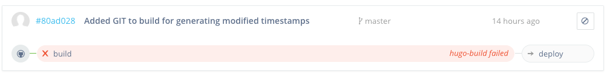

Displaying GIT metadata in Hugo templates
In order to display the last updated timestamp of a page, I had to set EnableGitInfo to true in the config.toml but this caused CI on wercker to fail as soon as I did a git push.

After some analysis, I found the root cause was with Unicode filenames which I used for some easter eggs in this page failing when gitinfo.go tries to fetch info for every file it encounters. I filed this on hugo-3071. If you navigate to http://rac.su/💩 you will see one of the easter eggs and this uses a emoji for the path. While git itself had no troubles working with this, it did add it to the repository as content/\360\237\222\251.md and this then caused the failing on getting the meta data in gitinfo.go.
Solution
The solution was suggested by bep and was to set the git option core.quotePath to false in order that it does not quote the Unicode filenames.
This worked on my local system (OSX) as well as on the Debian wercker box, the wercker.yml now looks like:
box: debian
build:
steps:
- install-packages:
packages: git
- script:
name: Set git config core.quotePath to false for emoji filenames
code: git config --global core.quotePath false
# Build the HUGO page in public folder
- arjen/hugo-build@1.14.1:
version: "0.18.1"
theme: mainroad
flags: --buildDrafts=false
deploy:
steps:
- install-packages:
packages: git ssh-client
# Deploy the public folder to gh_pages branch
- lukevivier/gh-pages@0.2.1:
token: $GIT_TOKEN
domain: rac.su
basedir: publicTemplate integration
I added following snippet to layouts/_default/single.html
<time class="post__meta-date" datetime="{{ .Date }}">
{{.Date.Format "January 02, 2006"}}
</time>
{{ if .GitInfo }}
(<time class="post__meta-date" datetime="{{ .GitInfo.AuthorDate }}">
{{.GitInfo.AuthorDate.Format "Last modified on January 02, 2006"}}
</time>)
{{ end }}